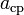

El péndulo cónico está constituido por un cuerpo pesado de pequeñas dimensiones (puntual, idealmente) suspendido de un punto fijo mediante un hilo inextensible y de masa despreciable. Su construcción es la misma que la de un péndulo simple, pero, a diferencia de éste, el péndulo cónico no oscila, sino que la masa pendular describe una trayectoria circular en un plano horizontal con aceleración constante. Su nombre proviene del hecho de que el hilo traza una superficie cónica. El péndulo cónico es un caso particular del péndulo esférico. En concreto es un péndulo esférico en el que el vector velocidad (inicial) es perpendicular al plano determinado por la vertical y el hilo. El científico inglés Robert Hooke fue el primero en estudiar las características de este péndulo, en 1660.
Representación Gráfica: Péndulo Cónico

¿Qué es?
Análisis del Movimiento
Consideremos un péndulo cónico consistente en una pequeña esfera de masa m que se mueve sin fricción en una
circunferencia horizontal con una celeridad constante v, suspendida de un hilo de longitud L que forma un
ángulo constante θ con la vertical.
Sobre la masa m actúan dos fuerzas: su propio peso, mg, y la tensión del hilo, T.
La componente horizontal de la tensión del hilo proporciona la aceleración centrípeta,
 ,
asociada con el movimiento circular. La componente vertical de la tensión se compensa exactamente con el
peso de la masa m.
La aplicación de la segunda ley de Newton en las direcciones horizontal y vertical nos
permite escribir (1) y (2):


 requerido
para realizar una revolución completa o periodo de revolución (4),
requerido
para realizar una revolución completa o periodo de revolución (4),


Esta propiedad, llamada isocronismo, la poseen también los péndulos ordinarios.
Ejercicio Explicativo
Desarrollo del Ejercicio: